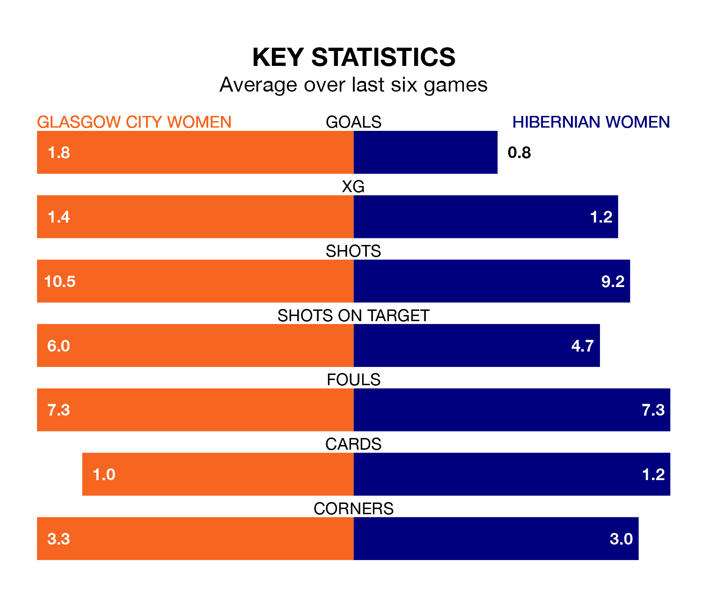

Sunday's match between Glasgow City Women and Hibernian Women promises to be one for the neutrals, as two of SWPL 1's most free-scoring sides go head-to-head.
Ahead of the game at Petershill Park, Glasgow City and Hibs sit third and fourth in the goal-scoring charts, with 83 and 65 goals respectively.
Striker Lauren Davidson leads the way for the home side, having bagged 15 goals in their 28 games to date.
And Jorian Baucom has been the main man in the opponents' penalty box for Hibernian, with 22 goals.
Glasgow City are in mixed form in SWPL 1, with three wins and a draw from their last six games.
With a win and five losses over that period, Hibernian's form is much worse – they have taken three points from 18, compared to the hosts' 10.
In the last 10 years, Glasgow City and Hibernian have played each other on 14 occasions. Glasgow City won 11 of them, Hibernian one, and they drew twice.
On average, Glasgow City scored 2.0 goals and Hibs 0.6 in those matches.
Their last meeting was on April 21, when Glasgow City won 1-0 away.
In Lee Alexander, Glasgow City can rely on one of the league's safest pair of hands. She has kept nine clean sheets in her 20 appearances this season, and only two other 'keepers – Celtic Women's Kelsey Daugherty and Rangers Women's Jenna Fife – have been able to prevent the opposition scoring on more occasions in SWPL 1.
In Hibs's net, Katie Fraine has seven clean sheets in 19 games. She has conceded a goal every 67 minutes, 50% more often than the 100 minutes between goals for Alexander.
Glasgow City are third in the table after 28 games, of which they have won 21 and drawn three, earning 66 points.
The away team are two places behind the home side in fifth, with 13 wins and three draws putting them on 42 points.
Glasgow City's last match was on Wednesday, a 2-2 draw against Celtic Women, with Charlotte Wardlaw and Hayley Lauder getting the goals for Glasgow City.
Hibernian lost 3-2 against Partick Thistle Women last time out, also on Wednesday, with Baucom and Megan Cunningham (own goal) on the scoresheet.
Updated: 12:00 (UTC), 02/05/24